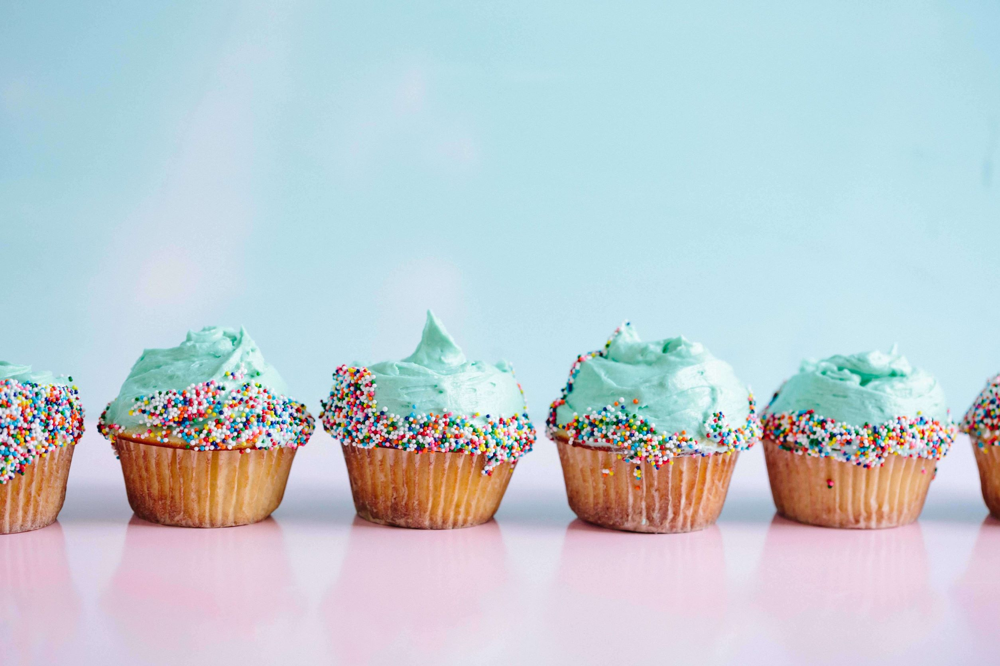

Ik vind het heerlijk om met het gezin uitstapjes te doen waarbij iedereen zijn energie in kwijt kan.
Denk hierbij maar aan een leuke boswandeling met een hindernissen parcours of een leuke buiten en binnen speeltuin.
Ook heb ik een zoon dat helemaal gek is van programmeren. Hij heeft dan ook als hobby programmeer lessen, voorlopig nog enkel met ‘Scratch’. Hij heeft wel al een voorproefje gehad van Javascript met zijn Minecraft programeer kamp. Wanneer we een me-time momentje hebben, wilt hij dan ook vaak samen op de computer ‘zijn games’ uitwerken.

Samen bakken met de kinderen is hier ook een top activiteit.
Taken verdelen wie wat moet doen om als een echt team een heerlijke cake op tafel te kunnen krijgen.
Als ik een momentje voor mezelf heb speel ik graag spelletjes waarbij ik puzzels moet oplossen. Mijn topfavorieten zijn Sudoku en de Japanse puzzel.
Mijn vrienden weten dat ze mij altijd blij kunnen maken met een brain-trainer puzzel. Bijvoorbeeld waarbij je een doosje op een bepaalde manier moet open maken, of een sleutel ergens moet kunnen uithalen. Hier kan ik wel uren mee bezig zijn.
Ik probeer ook wat te doen aan mijn algemene conditie. 1 keer per week doe ik aan Kickboksen voor enkel vrouwen. Als ik dan nog een momentje vrij vind ga ik met een vriendin naar de Zumba les.
Regelmatig proberen we een gezelschapsspel-avond te organiseren. Zowel met de familie als met vrienden en soms met kinderen, soms zonder. Dit ligt er vaak aan welk soort spel er gespeeld wordt. Absolute favorieten zijn hier: Monopoly, de Kolonisten van Catan en Escape room.